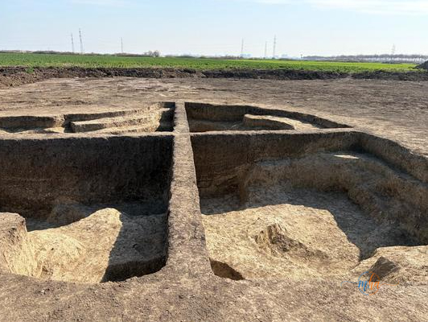

Lucrările la Centura de Vest a municipiului Timișoara au scos la iveală descoperiri importante din trecut. Pe traseul viitorului drum au fost identificate nu mai puțin de 14 zone cu vestigii arheologice, unele datând din perioada sarmaților, din secolele II-III. Descoperirile au surprins inclusiv specialiștii, confirmând că zona traversată de noua centură este bogată din punct de vedere al patrimoniului istoric.
Reprezentanții DRDP Timișoara au anunțat că pe șantier se desfășoară în prezent lucrări de descoperire arheologică, susținute de o echipă de specialiști acreditați, în paralel cu activitățile specifice construcției centurii.
📍 Descoperiri arheologice Centura Vest Timișoara — date cheie
- Număr zone cu vestigii identificate: 14 zone
- Perioada vestigiilor: sarmatică, sec. II-III d.Hr.
- Obiective istorice descoperite și din: sec. XVII-XVIII (localitățile Săcălaz)
- Responsabil șantier: DRDP Timișoara
- Lungime centură: ~14 kilometri
- Termen execuție: 2 ani (autorizație emisă 16 martie 2026)
- Valoare investiție: 3 miliarde lei (fără TVA)
- Finanțare: Programul Transport 2021-2027
Ce s-a descoperit pe traseul centurii
Echipele de arheologi au identificat pe traseul Centurii de Vest a Timișoarei urme de locuire din perioada sarmatică (sec. II-III d.Hr.), dar și obiective legate de istoria localităților Săcălaz din secolele XVII-XVIII. Echipa de arheologi continuă cercetările sistematice, în timp ce muncitorii desfășoară activitățile specifice șantierului.
„Pe șantierul de pe centura Timișoara se desfășoară lucrări de descoperire arheologică, coordonate de o echipă de specialiști. S-au descoperit până acum urme de locuire din perioadele sarmatice (Sec. II-III) și obiective legate de istoria localităților Săcălaz din secolele XVII-XVIII. Echipa de arheologi continuă cercetările, în timp ce muncitorii desfășoară activitățile specifice șantierului." — Reprezentant DRDP Timișoara
Șantierul Centurii de Vest Timișoara

Vestigii sarmatice scoase la iveală
Lucrările continuă în paralel cu cercetarea arheologică
În paralel cu cercetările arheologice, pe șantier se lucrează și la realizarea drumurilor tehnologice necesare pentru derularea lucrărilor de construcție a centurii. Cele două activități se desfășoară simultan, conform unui plan coordonat între constructori și echipa de specialiști în arheologie.
Proiectul Centurii de Vest Timișoara a primit autorizația de construire în data de 16 martie și are un termen de execuție de doi ani. Noua variantă de ocolare va avea o lungime de aproximativ 14 kilometri și va traversa teritoriile administrative ale municipiului Timișoara și ale localităților Săcălaz și Sânmihaiu Român.
Ce va include noua centură a Timișoarei
Drumul va include infrastructură rutieră complexă:
- 4 noduri rutiere pentru conectarea cu drumurile existente
- Zece poduri și pasaje, printre care unele de dimensiuni considerabile
- Cel mai lung pasaj: 219 metri, construit peste o linie de cale ferată
Investiția este estimată la trei miliarde de lei fără TVA, finanțare asigurată prin Programul Transport 2021-2027, unul dintre cele mai importante programe europene dedicate infrastructurii rutiere din România.
Importanța descoperirilor pentru istoria regiunii
Descoperirile arheologice de pe traseul Centurii de Vest Timișoara confirmă că zona de vest a României a fost intens locuită încă din antichitate. Sarmatii — popor nomad de origine iraniană — au populat teritoriile din vestul și sudul României în secolele II-III d.Hr., lăsând urme care sunt descoperite periodic cu ocazia marilor lucrări de infrastructură.
Alături de vestigiile sarmatice, descoperirile din secolele XVII-XVIII legate de localitățile Săcălaz completează tabloul istoric al zonei, oferind date prețioase pentru cercetătorii și istoricii care studiază evoluția așezărilor umane din Câmpia de Vest a României.
Sursa: DRDP Timișoara / Redactia MehedintiAzi.ro